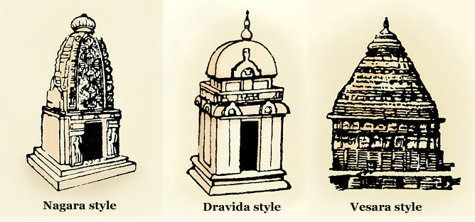

How Mandirs Were Built
The various religious treatises of Vastu Shastra provide precise guidelines about each aspect of the mandir and how it should be built – from the initial testing of the soil, to the final dedication.
Site Selection :
Any prospective site of a mandir first has to be tested for its suitability. This includes checking its topography as well as the soil’s density, porosity, texture, temperature, even colour and smell.
Homage to Earth :Once the site is deemed suitable, a public ceremony is performed to pay homage to the land and, through prayers, to seek permission from the earth to build upon it.
Foundations : When the foundations are first dug, a small urn containing auspicious emblems is ceremoniously placed directly below where the garbh-gruh (literally ‘womb’) and shikhars will rise, as if planting the germ that will grow into the living mandir.
Plans: A strand of mathematics and geometry developed in ancient India specifically to facilitate the exact building of Vedic altars and later mandirs. Plans incorporating mandalas (sophisticated cosmological drawings) and a meticulous system of measurements – with a unique base unit called the angula, or ‘finger’ – were used to regulate every dimension and detail of the mandir to be built. In fact, a common synonym for a mandir is ‘viman’, meaning well-measured or well-proportioned, because only if the mandir was built correctly could it function in harmony with the universe. Equally, as Mayamata the ancient Vastu Shastra text proclaims: If there is perfection in the mandir, there will be perfection in the world.
Materials: Mandirs were built to last a thousand years. To avoid corrosion and ensure the extended longevity of a mandir, ferrous metals such as steel were excluded from structural reinforcements and support. All masonry would be self-load-bearing. The ferrous metals are also said to concentrate the earth’s magnetic field, which could impede meditation once the mandir is complete.
Construction Team : Well-versed in the Vastu Shastra texts, attuned to the stone and tools, righteous, of healthy body and pious mind (i.e. free from malice, egotism, greed and jealousy), untiring, an upholder of tradition, and cheerful – these are just some of the qualifications required of the sthapati, or chief architect of the mandir project. Others within the construction team include the sutragrahi (surveyor), taksaka or shilpi (sculptor), and vardhaki (builder).
Dedication: Upon completion of the mandir, not only are all the patrons to be graciously thanked, but prayers must be conducted for the good health, prosperity and fame of all the workers as well as to appreciate the elements of nature that contributed to the construction of the mandir – stone, wood, water, fire and earth.
To read what ancient Hindu texts as well contemporary sages and scholars have to say about the mandir, please click here.
Rapport with Nature
From first seeking permission from the earth to build upon it, to finally thanking it when complete and begging forgiveness for any injury incurred in the process, every stage of a mandir’s construction indicates a tender, caring, and respectful relationship with nature.
This rapport is further reflected in the architectural features of a mandir which allude to the features of the natural world.
Thousands of years ago, the ancient Hindu seers prayed and meditated in the mountains, in forests, and in caves. When they built mandirs, they aspired to evoke the best of nature within them – its beauty and serenity, its power and prowess. So the shikhars (spires) that rise to reach out for the skies represent mountain peaks; the columns, a forest of trees; and the recessed shrines, the caves. Under the central dome, worshippers can stand as if under the open sky shimmering with a constellation of stars, the entire cosmos and its celestial beings beaming down with their blessings and benedictions.
Types of Mandirs
Ancient Hindu texts identify three main styles of classical mandir architecture, distinguished primarily on the horizontal cross-section of the shikhar, or main spire.
If the shape of the shikhar is square, the mandir is said to belong to the Nagara class; if hexagonal or octagonal, to the Dravida class; and if circular or elliptical, to the Vesara class.

In all three styles, the shape of the shikhars is usually curvilinear, pyramidal, and a mixture of both, respectively.
The Vesara style is not as prominent, found mainly in some central and south-western parts of India. The Nagara style predominates in north and west India, while the Dravida style is common among south Indian mandirs, especially with their distinctive gopurams – elaborate towering gateways replete with carved figures.
Mandirs within the Swaminarayan tradition are all of the Nagara style.